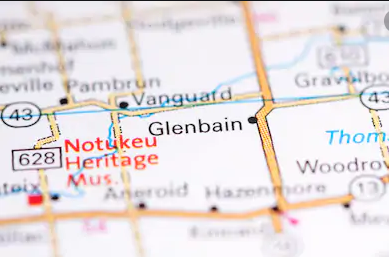
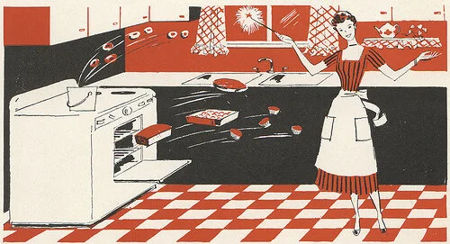

Glenbain Goodies shows us some of the best home-cooked recipes from around Glenbain, Sask.
We need your help!! We need pictures for each one of our recipes. If you create a recipe from the website, please take a picture and upload it here.
If you have a recipe you would like to add to the site, click here.